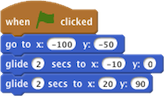

O ator começa em um ponto, e depois desliza para os outros pontos.
Use deslizar para mover um ator de maneira contínua para uma posição (x, y) no Palco.
Você pode ver a atualização de x e y na paleta Movimento de blocos quando você arrasta um ator para um outro ponto.